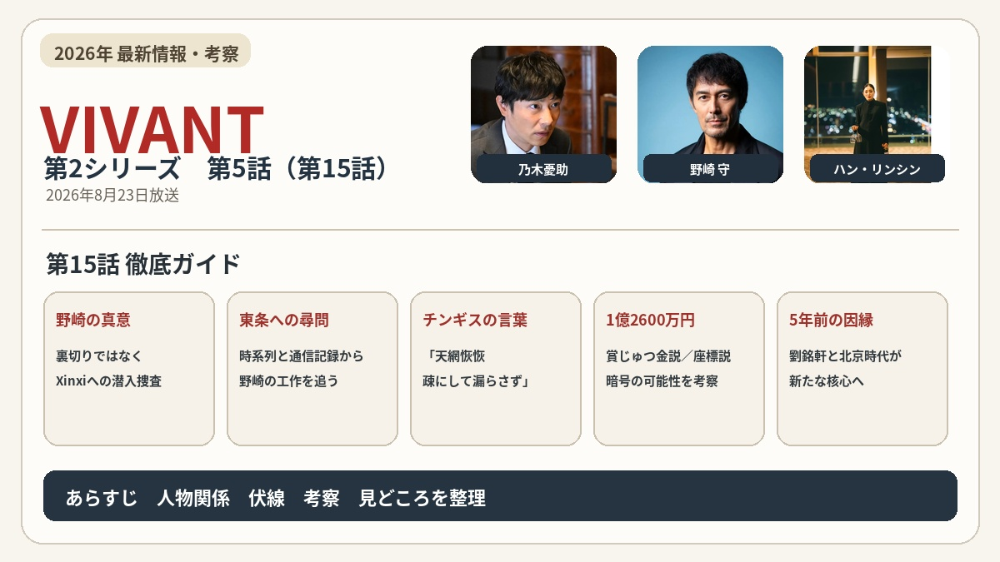

ドラマ視聴記録
2026年
視聴したドラマを、最新のものから順に記録しています。

VIVANT 第2シリーズ 第6話（第16話）
5年前の北京、劉銘軒の真実、Xinxi潜入、核融合技術、シャキ城。
第16話を見る →

VIVANT 第2シリーズ 第5話（第15話）
野崎の潜入捜査、東条への尋問、1億2600万円、劉銘軒の謎。
第15話を見る →

VIVANT 第2シリーズ 第4話（第14話）
野崎の裏切り、新庄の死、Xinxiと別班員5人の行方。
第14話を見る →

VIVANT 第2シリーズ 第3話（第13話）
新庄、長野、野崎をめぐる疑惑と公安・別班の動き。
第13話を見る →

VIVANT 第2シリーズ 第2話（第12話）
第12話のあらすじ・人物関係・伏線・考察。
第12話を見る →
VIVANT 第2シリーズ 第1話（第11話）
第11話のあらすじ・人物関係・伏線・考察。
第11話を見る →
2025年
2025年の視聴記録も、記事を整理できたものからここへ追加していきます。
2023年


作品・シリーズから見る
VIVANT 第2シリーズ
第11話から第16話までの各話一覧を見る →